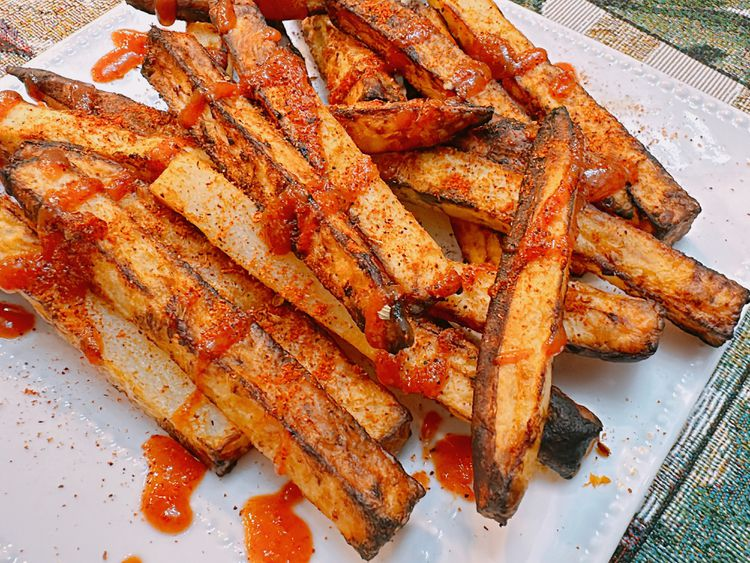

Air Fryer Sriracha Fries

Description
Air Fryer Sriracha Fries are crispy, spicy, and delicious French fries
cooked in an air fryer, offering a healthier alternative to deep-fried
fries. They are made with fresh potatoes, tossed in oil and Sriracha, and
air fried to golden perfection.
Ingredients
- 2 to 3 russet potatoes
- 1 tablespoon oil
- 2 tablespoons Sriracha
- 1 pinch salt
Direction
-
Cut potatoes into fries. Place cut fries into a bowl of water; soak for
1 hour.
-
Preheat the oven to 200 degrees F (95 degrees C). Line a baking sheet
with paper towels and set a wire rack over the sheet.
-
Preheat the air fryer to 375 degrees F according to manufacturer’s
instructions.
-
Drain fries, and pat dry with a paper towel. Place fries in a resealable
plastic bag. Add oil, 1 tablespoon Sriracha, and salt. Seal the bag and
toss to coat.
-
Add fries to bottom of air fryer basket in a single flat layer, not
stacked. You will have to work in batches.
- Air fry until crispy and golden brown, about 13 minutes.
-
Place fries on the prepared baking sheet; keep warm in the preheated
oven. Repeat with remaining fries.
- Place fries on a platter; drizzle with remaining sriracha. Enjoy.
Homepage